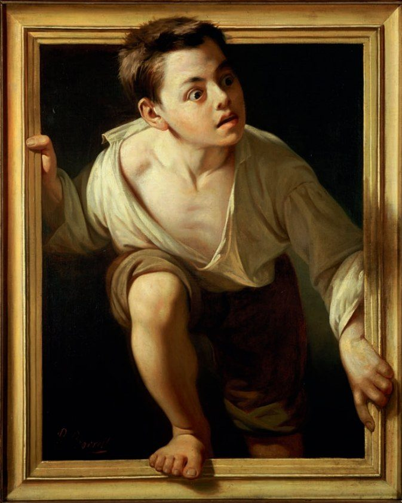
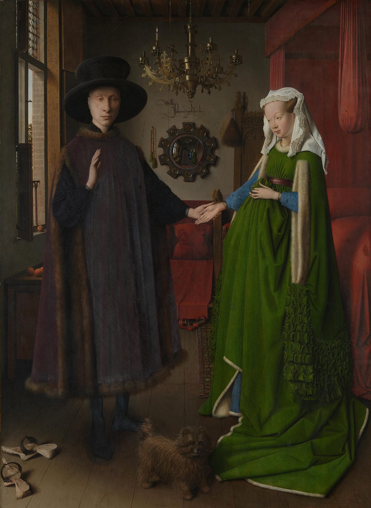

Teacher
Student
Our question
Can we still believe our eyes in a world of filters, edited photos and AI-generated images?
At the end of the sequence, you will work as a trainee social media assistant: you will reply to an unhappy customer, present an Honest Image Charter and defend it with your manager.
Lesson 1 · Seeing is believing? Diagnostic evaluation
CE CO PE PO PI

It looks like the back of a canvas turned against the wall. In fact, it is the painting itself.
In this lesson, you will:
- Describe an image and say what you think it shows.
- Express doubt and certainty.
- Take the diagnostic evaluation in the five language activities.
Building your vocabulary
| English | French |
|---|---|
| a photo / a picture | une photo / une image |
| to edit | retoucher, modifier |
| fake | faux |
| genuine | authentique |
| misleading | trompeur |
| to trust | faire confiance |
| a source | une source |
| to share | partager |
| to check | vérifier |
| a claim | une affirmation |
| evidence (uncountable) | des preuves |
| to fool someone | tromper quelqu'un |
Étude de la langue: Describing a picture
- Present continuous for what is happening in the picture: In the picture, a man is holding a phone.
- Present simple for facts and opinions: It shows a canvas. I think it is fake.
- look / seem / appear + adjective: It looks real. It seems old.
- look like + noun: It looks like a real canvas.
Exercise. Complete.
- In the photo, two people ______ (smile).
- The painting ______ (show) the back of a frame.
- It looks ______ a real piece of paper.
- The colours ______ (seem) natural.
- A woman ______ (take) a selfie.
- I ______ (not / believe) it is a photo.
French spelling corner: a ou à ?
« a » est le verbe avoir : on peut le remplacer par « avait ». « à » est une préposition : on ne peut pas le remplacer par « avait ».
- Le client ___ publié une photo ___ minuit.
- Cette image ___ été retouchée ___ la demande de la marque.
- Elle ___ vérifié la source avant de partager.
- Il faut regarder l'image ___ la loupe.
Flashcards
Make four flashcards. Front: the English word and a small drawing or symbol. Back: the French translation and one example sentence of your own. Keep them in an envelope: they are used at the start of Lesson 2.
Homework
- Learn the twelve words of Building your vocabulary.
- Gap-fill worksheet: complete with fake, check, share, trust, evidence.
- 1. Don't ______ a photo before you ______ the source.
- 2. There is no ______ that the photo is real.
- 3. I don't ______ this website.
- 4. This picture is ______: it was edited.
Lesson 2 · The perfect product photo
CE CO PE PO PI
Every piece of food is carefully placed and lit, like a product photo four centuries before advertising.
In this lesson, you will:
- Understand how product photos and adverts are made.
- Use the present passive to describe a process.
- Write an honest product description.
Building your vocabulary
| English | French |
|---|---|
| an advert / an ad | une publicité |
| a food stylist | un styliste culinaire |
| a product | un produit |
| lighting | l'éclairage |
| a shot | un plan, une prise de vue |
| to look appealing | avoir l'air appétissant, attirant |
| a portion | une portion |
| to mislead | induire en erreur |
| the customer | le client |
| a storyboard | un story-board |
| to enhance | mettre en valeur, améliorer |
| honest | honnête |
Étude de la langue: The present passive
- be (am / is / are) + past participle.
- Active: The stylist places the food. Passive: The food is placed by the stylist.
- We use the passive when the action matters more than the person: Silicone ice is used on set.
- Negative and question: It isn't edited. Is the photo edited?
Exercise. Complete.
- Fake ice ______ (use) because real ice melts.
- The camera ______ (move) by a robotic arm.
- Product photos ______ often ______ (edit).
- The pizza ______ (heat) with a handheld broiler.
- ______ the food ______ (eat) after the shoot? (question)
- The portion ______ (not / change) in the photo.
French spelling corner: ces, ses, c'est, s'est
« ces » : démonstratif (ces photos-là). « ses » : possessif (les siennes). « c'est » : cela est. « s'est » : verbe pronominal (il s'est trompé).
- Le photographe range ___ objectifs.
- ___ une publicité trompeuse.
- Le client ___ plaint de la photo.
- Regarde ___ images retouchées.
Flashcards
Make four new flashcards (front: word and drawing; back: translation and your own sentence in the passive). Keep them with your Lesson 1 cards.
Homework
- Put into the passive:
- 1. The stylist cleans the plates.
- 2. They use a robotic arm.
- 3. The café posts photos every day.
- 4. Somebody edits the colours.
Lesson 3 · Filters, retouching and the law
CE CO PE PO PI

A young painter shows his face through a curved mirror: the hand in front looks enormous. An early distorted selfie.
In this lesson, you will:
- Understand a news report on beauty filters in adverts.
- Compare rules in three countries with dates.
- Use modals of obligation and prohibition.
Building your vocabulary
| English | French |
|---|---|
| a filter | un filtre |
| to retouch | retoucher |
| an influencer | un influenceur |
| a beauty product | un produit de beauté |
| a complaint | une plainte, une réclamation |
| to ban | interdire |
| a label | une mention, une étiquette |
| compulsory | obligatoire |
| a regulator | une autorité de régulation |
| a ruling | une décision |
| body image | l'image du corps |
| mental health | la santé mentale |
Étude de la langue: Obligation and prohibition
- must / have to: it is necessary. In France, the label has to appear.
- mustn't: it is forbidden. Influencers mustn't exaggerate the effect of a product.
- don't have to: it is not necessary (but it is allowed). You don't have to label a landscape photo.
- be allowed to: permission. Are we allowed to use a filter?
Exercise. Complete.
- In Norway, advertisers ______ label retouched bodies. (obligation)
- You ______ use a filter that makes a tanning product look better. (prohibition)
- You ______ label a photo of a car if nobody is in it. (no obligation)
- Are influencers ______ use filters on beauty adverts?
- Since 2017, French adverts ______ show "Photographie retouchée" when a model's body is changed.
- Students ______ post photos of their classmates without permission. (prohibition)
French spelling corner: -é ou -er ?
Remplacez par « vendre » : si « vendre » convient, écrivez -er ; si « vendu » convient, écrivez -é.
- La photo a été retouch___.
- Il faut vérifi___ la source.
- Elle a publi___ un avis.
- Nous allons partag___ l'image.
Flashcards
Make four flashcards with the new words. On the back, write one sentence with must, mustn't or don't have to.
Homework
- Complete with must, mustn't or don't have to.
- 1. You ______ copy a photo from a website without permission.
- 2. Students ______ come to school on Sundays.
- 3. In France, some retouched adverts ______ carry a label.
- 4. Influencers ______ make a product look better with a filter.
Lesson 4 · Five stars, really? (mid-point evaluation) Mid-point evaluation
CE CO PE PO PI

A boy seems to climb out of the frame. The title speaks of criticism, which suits a lesson on reviews. Some catalogues date the work 1874, others 1875.
In this lesson, you will:
- Spot fake online reviews.
- Use the past simple and the present perfect in reviews.
- Reply to a negative customer review (evaluated).
Building your vocabulary
| English | French |
|---|---|
| a review | un avis |
| a rating | une note |
| a five-star review | un avis cinq étoiles |
| a verified purchase | un achat vérifié |
| a reviewer | l'auteur d'un avis |
| to post | publier |
| suspicious | suspect |
| wording | la formulation |
| a refund | un remboursement |
| to apologise | s'excuser |
| to deal with | traiter, gérer |
| banned | interdit |
Étude de la langue: Past simple or present perfect?
- Past simple: a finished moment (yesterday, last week, in 2024). I ordered the case last Monday.
- Present perfect: past action linked to now, no precise time. I have used it for two weeks. It has broken.
- With since and for, use the present perfect: The law has been in force since April 2025.
Exercise. Complete.
- I ______ (buy) this phone case last week.
- It ______ (break) already.
- Fake reviews ______ (be) banned in the UK since April 2025.
- The FTC ______ (announce) its rule on 14 August 2024.
- We ______ (receive) your complaint. (linked to now)
French spelling corner: quand, quant, qu'en
« quand » : à quel moment (remplaçable par « lorsque »). « quant à » : en ce qui concerne. « qu'en » : que + en (qu'en penses-tu ?).
- ___ un avis est trop parfait, méfie-toi.
- ___ aux photos, elles étaient retouchées.
- ___ pensez-vous ?
- Réponds au client ___ tu as vérifié la commande.
Flashcards
Homework: four flashcards with the review words. Example sentence on the back in the past simple or the present perfect.
Homework
- Make four flashcards with the review words.
- Write two sentences about your own experience of online shopping: one in the past simple, one in the present perfect.
Lesson 5 · Deepfakes and AI-generated images
CE CO PE PO PI

A face built entirely from fruit, vegetables and flowers: a portrait assembled from pieces, like a synthetic image.
In this lesson, you will:
- Understand six tips to spot AI-generated images.
- Make deductions with must, might, can't.
- Explain a dated fact check.
Building your vocabulary
| English | French |
|---|---|
| AI-generated | généré par IA |
| a deepfake | un hypertrucage |
| a fact check | une vérification des faits |
| to zoom in | zoomer |
| a reverse image search | une recherche d'image inversée |
| a clue | un indice |
| blurred | flou |
| a shadow | une ombre |
| too good to be true | trop beau pour être vrai |
| to label | signaler, étiqueter |
| to go viral | devenir viral |
| a hoax | un canular |
Étude de la langue: Deduction: must, might, can't
- must + base verb: I am almost sure it is true. It must be AI: the hands are strange.
- might / could: it is possible. It might be a real photo.
- can't: I am almost sure it is false. It can't be a photo from 1990: the phone is too modern.
- Past (B1+): must have been made with AI.
Exercise. Complete.
- The fingers are melting. It ______ be AI-generated. (almost sure)
- There is no source. It ______ be true, but we need to check. (possible)
- The Pope is wearing a designer jacket from a street brand... it ______ be real! (almost sure it's false)
- The shadows go in two directions. The image ______ have been edited. (past, almost sure)
- This photo ______ be from a news agency. Let's do a reverse image search. (possible)
French spelling corner: leur ou leurs ?
Devant un verbe, « leur » = « à eux », invariable (je leur montre). Devant un nom, « leur » ou « leurs » s'accorde (leurs photos).
- Les influenceurs retouchent ___ photos.
- Je ___ ai expliqué la méthode.
- Ils ont partagé ___ vidéo.
- Montre-___ les indices.
Flashcards
Make four flashcards. On the back, write one deduction: It must be... / It might be... / It can't be...
Homework
- Write three deductions about this situation: "A photo shows a famous footballer working in your local supermarket." Use must, might and can't.
Lesson 6 · Posting for a company: check before you share
CE CO PE PO PI

The small mirror at the back shows two people we cannot see in the main scene. Details tell the real story.
In this lesson, you will:
- Apply a checking method (SIFT) in a professional context.
- Use the first conditional and unless.
- Prepare the final task.
Building your vocabulary
| English | French |
|---|---|
| a social media manager | un responsable des réseaux sociaux |
| a policy | une charte, une politique |
| a post | une publication |
| an outlet | un média |
| a reporter | un reporter, un journaliste |
| an opinion | une opinion |
| a fact | un fait |
| to verify | vérifier |
| to spread | se répandre, répandre |
| reliable | fiable |
| a rumour | une rumeur |
| a reputation | une réputation |
Étude de la langue: First conditional and unless
- If + present simple, will + base verb: If we post a fake photo, customers will lose trust.
- unless = if not: We won't share it unless we check the source.
- Never use will after if: not
If we will post, but If we post.
Exercise. Complete.
- If we ______ (use) a filter, the customer ______ (be) disappointed.
- We ______ (not / share) the video unless we ______ (find) the original.
- If the reviews ______ (be) fake, we ______ (report) them.
- Customers ______ (trust) us if we ______ (show) real photos.
- Unless you ______ (check), you ______ (make) a mistake.
French spelling corner: on ou ont ?
« ont » est le verbe avoir (remplaçable par « avaient »). « on » est un pronom (remplaçable par « il »).
- Les clients ___ laissé des avis.
- ___ doit vérifier la source.
- Ils ___ retouché la photo.
- ___ ne partage pas sans vérifier.
Flashcards
Make four flashcards. On the back, write one sentence with if or unless.
Homework
- Prepare the final task: write the three rules of your company's Honest Image Charter on a card (key words only, no full sentences).
- Revise the flashcards of Lessons 1 to 6.
Lesson 7 · Trust check at work (summative evaluation) Summative evaluation
CE CO PE PO PI

Who is looking at whom? The painter, the princess and a mirror play with the viewer. A final puzzle about point of view.
In this lesson, you will:
- Show what you can do in the five language activities.
- Answer the question of the sequence.
- Assess yourself with the grid.
Building your vocabulary
| English | French |
|---|---|
| a graph | un graphique |
| a scale | une échelle |
| to exaggerate | exagérer |
| data | des données |
| cherry picking | la sélection orientée des données |
| a charter | une charte |
| trustworthy | digne de confiance |
| to disappoint | décevoir |
| compensation | un dédommagement |
| to improve | améliorer |
| transparency | la transparence |
| in conclusion | pour conclure |
Étude de la langue: Revision: the tools of the sequence
- Describe: It looks like... / In the photo, a man is holding...
- Passive: The photos are edited.
- Rules: must / mustn't / don't have to.
- Reviews: past simple (I booked) and present perfect (We have checked).
- Deduction: It must / might / can't be...
- Consequence: If we..., customers will...
Exercise. Complete.
- The photos ______ (take) last year. (passive, past)
- We ______ (check) your booking. (present perfect)
- Adverts ______ mislead customers. (prohibition)
- If you ______ (send) us your photos, we ______ (refund) you.
French spelling corner: son ou sont ?
« sont » est le verbe être (remplaçable par « étaient »). « son » est un possessif (remplaçable par « mon »).
- Les photos ___ retouchées.
- Le client a envoyé ___ avis.
- Les avis ___ vérifiés.
- Elle présente ___ entreprise.
Flashcards
Before the evaluation: two minutes of flashcard revision in pairs (all lessons).
Homework
- Write three lines in English: what I learnt in this sequence, what I found difficult, what I will do differently online.
Compréhension de l'écrit
Lesson 1 · One photo, three stories
Text written for the class (fictional situation, realistic facts).
On Monday morning, a photo appears on a local news page. It shows a flooded street with a car under water. In two hours, it is shared 3,000 times.
Story one: a user says the photo was taken that morning in your town. Story two: another user says it is an old photo from a different country. Story three: a journalist explains she checked the photo. She found the same image on a website from 2019.
The journalist says: "Before you share a photo, ask three questions: Where is it from? What is missing? How does it make me feel?" These three questions come from Full Fact, a British fact-checking charity.
Questions. Answer in English.
- How many times is the photo shared in two hours?
- What does the first user say?
- What does the journalist find?
- Give the three questions to ask before sharing.
- Which story is the most reliable? Why?
Lesson 2 · Bright Bites: product photo guidelines
Professional document written for the class (fictional café).
Bright Bites is a small café in Manchester. It posts photos of its products on its website and social media every day. Here are the rules for all staff.
1. Photos are taken in natural light or with our studio lamp. 2. Plates are cleaned and food is placed carefully. 3. The portion in the photo must be the portion we sell. 4. No ingredient is added for the photo if it is not in the product. 5. Colours may be corrected a little, but the product must not look different.
Why? In the UK, the advertising code says that adverts must not materially mislead customers (CAP Code, section 3). An unhappy customer can also post a bad review.
Questions. Answer in English.
- Where is Bright Bites?
- How often does the café post photos?
- Find the rule about portions.
- What can staff change in a photo? What must they not change?
- Give the two reasons for the rules.
Lesson 3 · Filters, retouching and the law
Article written for the class from official sources (see the sources box).
France was one of the first countries to act. Since 1 October 2017, commercial photos of models whose body shape has been made thinner or larger with software must carry the label "Photographie retouchée" (Code de la santé publique, article R2133-5).
In the United Kingdom, the Advertising Standards Authority (ASA) ruled against two adverts for tanning products in early 2021. The influencers had used beauty filters that made their skin look darker. On 11 February 2021, the ASA explained that filters must not exaggerate the effect a product can achieve.
In Norway, a law has been in force since 1 July 2022: adverts in which body shape, size or skin has been retouched must carry an official, standard label.
Not everybody agrees. Some say labels protect young people. Others say most photos are edited a little, so labels everywhere would mean nothing.
Questions. Answer in English.
- Which country acted first? Since when?
- What must the French label say?
- Why did the ASA rule against the two adverts?
- What does the Norwegian law cover?
- Give one argument for labels and one against.
Lesson 4 · Reviews for the PhoneShield case
Reviews written for the class (fictional product); fact box from official sources.
Review A, 5 stars, posted 3 March: "Wow, this case changed my life! Best product ever!"
Review B, 5 stars, posted 3 March: "Wow, this case changed my life! Amazing!"
Review C, 2 stars, verified purchase, posted 12 March: "I have used it for two weeks. The colour is darker than in the photo and one corner has cracked."
Review D, 5 stars, posted 3 March: "Perfect perfect perfect. Buy it now."
Review E, 4 stars, verified purchase, posted 20 March: "Good protection. I dropped my phone twice and it didn't break. A bit heavy."
Review F, 1 star, posted 21 March: "Terrible. Never buy from this company." (The reviewer has posted 40 one-star reviews this week.)
Fact box. In the UK, fake reviews became banned practices from 6 April 2025 under the Digital Markets, Competition and Consumers Act 2024. In the USA, the Federal Trade Commission announced a rule banning fake reviews on 14 August 2024; it came into force on 21 October 2024.
Questions. Answer in English.
- Which three reviews were posted on the same day? Why is it suspicious?
- Which two reviews use almost the same wording?
- Which reviews are verified purchases?
- Why is review F suspicious?
- Since when have fake reviews been banned in the UK? Under which law?
Lesson 5 · The Pope in a puffer jacket
Text written for the class from fact checks and an official EU source.
At the end of March 2023, an image of Pope Francis wearing a long white puffer coat spread on social media. Many users thought it was real and praised his style.
On 28 March 2023, the AFP fact-checking team explained that the image was not authentic and showed signs of AI manipulation. On 29 March 2023, Reuters Fact Check confirmed that it was generated with an artificial intelligence system. Clues included the hand and the object he was holding.
Since then, rules have changed. In the European Union, Article 50 of the AI Act applies from 2 August 2026, according to the European Commission: people must be informed when they see a deepfake.
Two serious sources, AFP and Reuters, checked the image separately and reached the same conclusion. This is what fact-checkers call finding better coverage.
Questions. Answer in English.
- When did the image spread?
- What did many users think?
- Which two organisations checked the image? On which dates?
- What changes in the EU from 2 August 2026?
- Mediation: explain in French, in two sentences, to a younger brother or sister, why this story is important.
Lesson 6 · Social media policy and the SIFT method
Professional document written for the class (fictional company) and a method from a university library.
Northgate Services is a company that repairs and installs equipment. Its social media policy says: 1. We only post photos of our real work. 2. Customer photos are posted with written permission. 3. We never buy reviews and we never post reviews ourselves. 4. Before sharing news about our sector, we check it.
To check, staff use the SIFT method, created by Mike Caulfield, a digital literacy expert. S: Stop. Don't share yet. I: Investigate the source. Who published it? F: Find better coverage. Do other reliable sources say the same? T: Trace claims, quotes and media to the original context.
Full Fact, a British fact-checking charity, adds three simple questions: Where's it from? What is missing? How do you feel?
Questions. Answer in English.
- What does Northgate Services do?
- What is needed before posting a customer's photo?
- What does the company never do with reviews?
- What do the four letters of SIFT mean?
- Why is "How do you feel?" a useful question?
Lesson 7 · When the hotel was not like the photos
Case study written for the class (fictional hotel).
In July, Ms Patel booked a room at the Seaview Hotel for her family. On the website, the photo showed a large room with a sea view and a new swimming pool.
When she arrived, the room was smaller and the window looked onto the car park. The pool was closed for repairs. She later found out that the photos had been taken in 2018 and edited to make the sky bluer and the room bigger.
Ms Patel posted a two-star review: "The staff were kind, but the photos were misleading." The manager replied the next day. He apologised and offered her one night at no cost on her next visit.
The hotel has since replaced all its photos with recent, unedited pictures. Bookings fell for a month, then went back up, and the hotel's average rating has improved.
Questions. Answer in English.
- When did Ms Patel book? Who for?
- Give two differences between the photos and reality.
- How were the photos misleading? Give two ways.
- What did the manager do?
- What happened after the hotel replaced its photos?
Compréhension de l'oral
Lesson 1 · How false news can spread (3:42)
How false news can spread
Noah Tavlin, TED-Ed · 27 August 2015 · length 3:42
Link: https://www.youtube.com/watch?v=cSKGa_7XJkg
What we watch: Whole video, 0:00 to 3:42, watched twice.
Timings (to within a few seconds):
- 0:06 A quote "usually attributed" to Mark Twain: there is reason to doubt he ever said it.
- 1:00 Definition of circular reporting: publication A, publication B, and A cites B.
- 2:09 A joke article in the British Medical Journal cited over 400 times.
- 2:25 Wikis and circular reporting.
- 3:07 Three pieces of advice: avoid sensationalist media, search for criticisms, trace the original source.
Tasks. First viewing: what is the video about? Second viewing: answer.
- True or false: the video is sure that Mark Twain said the quote about lies.
- Complete: circular reporting is when publication A publishes misinformation, publication B ______ it, and A then ______ B as the source.
- How many times was the joke article from the British Medical Journal referenced?
- Name one type of user-generated content mentioned.
- Give two pieces of advice at the end.
Lesson 2 · Professional Food Stylist Explains How Food Commercials Are Made with David Ma (3:53)
Professional Food Stylist Explains How Food Commercials Are Made with David Ma
BuzzFeedVideo · 12 May 2022 · length 3:53
Link: https://www.youtube.com/watch?v=llPLxDfeoQY
What we watch: Whole video. Tasks focus on 0:13 to 1:47.
Timings (to within a few seconds):
- 0:13 David Ma introduces himself: director and filmmaker.
- 0:34 Fake silicone ice instead of real ice cubes: two reasons.
- 0:55 The lip of a pan is cut off to get closer to the food.
- 1:07 Robotic arms (motion control) for slow-motion shots.
- 1:20 The storyboard.
- 1:30 The pizza "concert" advert with a fake oven and a handheld broiler.
- 1:47 Four tips for getting started in the industry.
Tasks. First viewing: what is the video about? Second viewing: answer.
- What is David Ma's job?
- Why do they use fake silicone ice? Give two reasons.
- Why do they cut the lip off a pan?
- What is used to move the camera for slow-motion shots?
- In the pizza advert, what does the stylist hold?
Lesson 3 · Influencer adverts banned for using filters (2:37)
Influencer adverts banned for using filters
5 News · 5 February 2021 · length 2:37
Link: https://www.youtube.com/watch?v=8_UobMZr3jw
What we watch: Whole video, watched twice.
Timings (to within a few seconds):
- 0:00 Sasha Pallari, model and make-up artist, has posted selfies for a decade.
- 0:23 She set up the online campaign #filterdrop.
- 0:52 The message from a primary school teacher about a six-year-old.
- 1:07 The complaint to the Advertising Standards Authority about two adverts.
- 1:17 Beauty filters made the influencers' skin look darker: misleading for a tanning product.
- 1:39 Mental health and time spent looking at ourselves on video calls.
Tasks. First viewing: what is the video about? Second viewing: answer.
- What is Sasha's job?
- What is the name of her online campaign?
- What did the six-year-old girl say?
- Which organisation agreed with Sasha?
- Why were the adverts misleading?
Lesson 4 · How to spot fake reviews when you're shopping online (2:34)
How to spot fake reviews when you're shopping online
News4JAX, with advice from Consumer Reports · 22 August 2023 · length 2:34
Link: https://www.youtube.com/watch?v=RlnJmCQr400
What we watch: Whole video, watched twice (mid-point evaluation).
Timings (to within a few seconds):
- 0:18 "Too good to be true": the problem of glowing five-star reviews.
- 0:45 Kay Dean and her Fake Review Watcher channel.
- 1:06 A study by Fakespot: 42% of reviews analysed were not real (figure given in the report).
- 1:13 Sign 1: many very positive reviews posted on the same day.
- 1:27 Sign 2: similar wording in several reviews.
- 1:38 Tip: look for the "verified purchase" tag.
- 1:57 Tip: check the reviewer's profile.
Tasks. First viewing: what is the video about? Second viewing: answer.
- What does the reporter say about reviews that sound too good to be true?
- What did Kay Dean create?
- According to the Fakespot research quoted, what percentage of reviews were not real?
- Give two warning signs.
- What tag should you look for? What does it mean?
Lesson 5 · Fact Check: How to spot AI images? (8:21)
Fact Check: How to spot AI images?
DW News · 28 April 2023 · length 8:21
Link: https://www.youtube.com/watch?v=L0X3W1utdRQ&t=161s
What we watch: Extract only: 2:41 to 7:01 (4 min 20 s), the six tips. Start the video at 2:41 with the link below.
Timings (to within a few seconds):
- 2:41 Tip 1: take a closer look and zoom in (the image of the Pope in a designer jacket).
- 3:34 Tip 2: search for the origin of the image (reverse image search).
- 4:09 Tip 3: watch out for typical AI mistakes (glasses, earrings).
- 4:53 Tip 4: look at body proportions (hands, feet, ears).
- 5:33 Tip 5: is the image too good to be true? (smooth, plastic skin).
- 6:28 Tip 6: check the background.
- 7:01 Stop here.
Tasks. First viewing: what is the video about? Second viewing: answer.
- Tip 1: what should you do if you have the slightest doubt?
- What details showed that the Pope image was fake? Give two.
- Tip 2: how can you find the origin of an image?
- Tips 3 and 4: name two typical mistakes.
- Tip 5: why can an image look "too good to be true"?
Lesson 6 · How to choose your news (4:48)
How to choose your news
Damon Brown, TED-Ed · 5 June 2014 · length 4:48
Link: https://www.youtube.com/watch?v=q-Y-z6HmRgI
What we watch: Whole video. Tasks focus on 1:28 to 4:48.
Timings (to within a few seconds):
- 0:08 Information is limitless, but our time and energy are not.
- 1:28 Social media turns every citizen into a potential reporter.
- 1:43 Advice 1: get the original news, unfiltered by middlemen.
- 2:24 Advice 2: the more chaotic the story, the less you should follow it in real time.
- 3:03 Advice 3: read several outlets.
- 3:19 Advice 4: separate fact from opinion (think, likely, probably).
- 3:43 Advice 5: verify news before spreading it.
Tasks. First viewing: what is the video about? Second viewing: answer.
- What does social media turn every citizen into?
- Advice 1: what kind of news should you look for?
- Why should you not follow a chaotic story in real time?
- Which words show that an outlet is guessing?
- What should you do before you share outrageous news?
Lesson 7 · How to spot a misleading graph (4:10)
How to spot a misleading graph
Lea Gaslowitz, TED-Ed · 6 July 2017 · length 4:10
Link: https://www.youtube.com/watch?v=E91bGT9BjYk
What we watch: Whole video, watched twice (summative evaluation).
Timings (to within a few seconds):
- 0:07 Advertising exaggerations: toothpaste and politicians.
- 0:38 A 1992 truck advert: the scale only goes from 95 to 100%.
- 1:36 Distorting the x-axis: an inconsistent time scale.
- 2:06 Cherry picking: choosing the time range.
- 2:24 Leaving out data: Super Bowl viewers and population growth.
- 2:49 Same data, two graphs: ocean temperatures.
- 3:35 Final advice: look at the labels, the numbers, the scale and the context.
Tasks. First viewing: what is the video about? Second viewing: answer.
- What does the toothpaste brand claim at the start?
- In the 1992 truck advert, what was wrong with the scale?
- What is cherry picking?
- Why does the Super Bowl graph mislead?
- What four things should you look at in a graph?
Writing
Lesson 1 · Seeing is believing?
Describe the Gijsbrechts painting in 40 to 60 words. Say what you see first, what it really is, and how you feel.
Checklist
- ☐ I use the present simple and the present continuous.
- ☐ I use look, seem or look like.
- ☐ I give my feeling with a reason (because).
Lesson 2 · The perfect product photo
Write an honest description (30 to 40 words) to go with a photo of a product from your vocational field (a dish, a tool, a piece of clothing, a service). Use two passive forms.
Checklist
- ☐ Two passive forms.
- ☐ One precise fact (size, price, quantity).
- ☐ Nothing that the customer will not get.
Lesson 3 · Filters, retouching and the law
Write three rules (one sentence each) for the social media of a company in your vocational field. Use must, mustn't and don't have to.
Checklist
- ☐ One must, one mustn't, one don't have to.
- ☐ Each rule is linked to my company.
- ☐ Each rule is short and clear.
Lesson 4 · Five stars, really? (mid-point evaluation)
You work in customer service for the company that sells PhoneShield. Reply to review C (80 to 100 words). Thank the customer, apologise, explain what you have done and offer a solution.
Checklist
- ☐ I thank and apologise.
- ☐ I use the present perfect (we have checked).
- ☐ I offer a clear solution.
- ☐ Polite opening and closing.
Lesson 5 · Deepfakes and AI-generated images
Write a short caption (25 to 35 words) for a company post warning customers about a fake advert using your company's name. Use one deduction.
Checklist
- ☐ One deduction (must / might / can't).
- ☐ A clear instruction for customers.
- ☐ Polite and calm tone.
Lesson 6 · Posting for a company: check before you share
Draft an honest post (60 to 80 words) for a company in your vocational field to present a new product or service. Include one real photo description, one fact and one sentence with if or unless.
Checklist
- ☐ Real photo described, permission mentioned.
- ☐ One fact (price, time, place).
- ☐ One if or unless sentence.
- ☐ No exaggeration.
Lesson 7 · Trust check at work (summative evaluation)
You work at the Seaview Hotel. Reply to Ms Patel's review (100 to 120 words). Thank her, apologise, explain what the hotel has done (present perfect), give one new rule (must / mustn't) and make an offer (if...).
Checklist
- ☐ Thanks, apology, explanation, solution.
- ☐ Present perfect, must or mustn't, if.
- ☐ Formal opening and closing.
- ☐ 100 to 120 words.
Speaking
Every student speaks
Talking round: every student says at least one sentence, using the frame on the board. Tick names on the class list; nobody leaves without speaking. A student who freezes may read the frame aloud and add one word of their own.
Lesson 1 · Seeing is believing?
Speaking in continuous form (EOC): Talking round: "I think it is... because..." (30 seconds each).
Interaction (EOI): In pairs, one minute: A shows a photo on the worksheet, B asks "Where is it from?", "Would you share it?". Swap roles.
Useful phrases
- I think it is... because...
- It looks like...
- I'm not sure. Maybe...
- I would / wouldn't share it because...
Lesson 2 · The perfect product photo
Speaking in continuous form (EOC): Talking round on the painting: "The food is placed... It looks...".
Interaction (EOI): Pairs. A is the photographer: he wants a bigger portion in the photo. B is the shop manager: she wants an honest photo. Find an agreement in one minute.
Useful phrases
- Could we...?
- I'm afraid we can't, because...
- What about... instead?
- OK, let's agree on...
Lesson 3 · Filters, retouching and the law
Speaking in continuous form (EOC): Talking round on the painting: "His hand looks... because...".
Interaction (EOI): Mini-debate: "Should all retouched photos be labelled?". Two sides of the room. Each student gives one argument and reacts to the previous one.
Useful phrases
- In my opinion, ... because...
- I agree with ... but...
- I disagree, because...
- For example, in France since 2017...
Lesson 4 · Five stars, really? (mid-point evaluation)
Speaking in continuous form (EOC): One minute each: "Three signs of a fake review". Use first, then, finally.
Interaction (EOI): Role-play, one minute: A is the unhappy customer of review C, on the phone. B is the customer service assistant. B must calm A down and offer a solution.
Useful phrases
- I'm calling about...
- I'm sorry to hear that.
- Could you give me your order number?
- We can offer you... or...
- Would that be OK for you?
Lesson 5 · Deepfakes and AI-generated images
Speaking in continuous form (EOC): Arcimboldo starter (written today, read aloud in Lesson 6 if time is short).
Interaction (EOI): Game "Real or not?": student A describes a picture on the worksheet without showing it; the others deduce: "It must be...", "It can't be...". Everybody speaks at least twice.
Useful phrases
- It must be... because...
- It might be... but we need to check.
- It can't be real, look at the...
- Let's do a reverse image search.
Lesson 6 · Posting for a company: check before you share
Speaking in continuous form (EOC): Rehearsal: present your company's "Honest Image Charter" in one minute (three rules).
Interaction (EOI): Pairs: A presents, B asks two questions, then they swap. B gives feedback with the self-assessment grid.
Useful phrases
- Our company is... We...
- Our first rule is...
- If we..., customers will...
- Unless we check, ...
- Do you have any questions?
Lesson 7 · Trust check at work (summative evaluation)
Speaking in continuous form (EOC): Present your company's Honest Image Charter (one minute): introduce the company, three rules, one consequence with if.
Interaction (EOI): Role-play (one minute): the manager (played by the teacher or a classmate with a role card) wants to post a filtered photo and buy five-star reviews. You disagree politely and propose another solution.
Useful phrases
- I understand, but...
- I'm afraid it's not a good idea, because...
- Since April 2025, in the UK...
- What if we... instead?
- If we post real photos, customers will...
Lesson summary
Copy it into your exercise book.
Lesson 1 · Seeing is believing?
- Problem of the sequence: Can we still believe our eyes in a world of filters, edited photos and AI-generated images?
- A trompe-l'œil (Gijsbrechts, c. 1670) shows that images have always been able to fool us.
- Before sharing, ask three questions: Where is it from? What is missing? How does it make me feel?
- Étude de la langue: In the picture, a man is holding... / It looks real. / It looks like a canvas.
Lesson 2 · The perfect product photo
- Product photos are prepared: food is placed, lit and sometimes replaced (silicone ice).
- An advert must not mislead the customer: the portion in the photo must be the portion sold.
- Étude de la langue: the present passive, be + past participle: The photo is edited. Are the colours changed?
Lesson 3 · Filters, retouching and the law
- France (1 October 2017): label "Photographie retouchée" on certain commercial photos of models.
- UK (rulings early 2021, explained by the ASA on 11 February 2021): filters must not exaggerate the effect of a product.
- Norway (1 July 2022): an official label on adverts with retouched bodies or skin.
- Étude de la langue: must / have to (obligation), mustn't (prohibition), don't have to (no obligation).
Lesson 4 · Five stars, really? (mid-point evaluation)
- Warning signs: many positive reviews on the same day, the same wording, no verified purchase, a reviewer who only posts extreme reviews.
- UK: fake reviews banned since 6 April 2025 (DMCC Act 2024). USA: FTC rule in force since 21 October 2024.
- Étude de la langue: past simple for a finished moment (I bought it last week); present perfect for a link with now (It has broken).
Lesson 5 · Deepfakes and AI-generated images
- Six tips: zoom in; find the origin (reverse image search); look for typical mistakes; check body proportions; ask if it is too good to be true; check the background.
- March 2023: the image of the Pope in a puffer coat was AI-generated (AFP, 28 March; Reuters, 29 March).
- EU: Article 50 of the AI Act applies from 2 August 2026; deepfakes must be disclosed.
- Étude de la langue: must (almost sure, yes), might (possible), can't (almost sure, no).
Lesson 6 · Posting for a company: check before you share
- SIFT: Stop, Investigate the source, Find better coverage, Trace to the original context.
- A company protects its reputation with clear rules: real photos, permission, no fake reviews, checking before sharing.
- Étude de la langue: If + present, will + verb. Unless = if not.
Lesson 7 · Trust check at work (summative evaluation)
- Answer to the question of the sequence: we cannot always believe our eyes, but we can learn to check.
- At work: real photos, honest descriptions, no fake reviews, polite replies to complaints, check before sharing (SIFT).
- Graphs can mislead too: look at the labels, the numbers, the scale and the context.
Plan B
How to use this tab
Each lesson has a stop point at about minute 40. If you reach it late, follow the instruction and go straight to the written summary. The plans below work without internet, without a projector, or with a difficult class.
Lesson 1 · Seeing is believing?
Stop point, minute 42. If you are late, go straight to the written summary and set the EE task as homework.
- No internet or video: read aloud the teacher script below twice, at normal speed. Students do the same CO tasks.
- Teacher script (summary in your own words, 1 minute): "Many people believe that Mark Twain said: a lie can travel halfway around the world while the truth is putting on its shoes. But nobody is sure he said it. Today false news travels very fast. Sometimes newspaper A publishes false information, newspaper B copies it, and then A says: B is my source. A joke article in a medical journal was cited more than 400 times. Wikis can also spread errors. So: avoid sensational media, look for criticism, and find the original source."
- No projector: give the printed colour copy of the painting (worksheet page 1).
- Class too agitated after the art starter: switch to the silent individual CE task, then come back to oral work in pairs.
Lesson 2 · The perfect product photo
Stop point, minute 40. If you are late, skip the role-play and go to the summary; the EE task becomes homework.
- No video: read aloud the script twice. "David Ma is a director. He started as a food stylist. On his sets, he uses fake silicone ice, because film lights melt real ice, and real ice makes noise. He cuts the side of a pan to get the camera closer. Robotic arms move the camera for slow-motion shots. Everything starts with a storyboard. For a pizza advert, they built a fake oven, and a stylist used a small broiler to keep the cheese bubbly."
- No projector: printed painting on the worksheet.
- Running late at the stop point: the role-play moves to the start of Lesson 3 (two minutes).
Lesson 3 · Filters, retouching and the law
Stop point, minute 39. If you are late, do the debate as a talking round only (one sentence each) and go to the summary.
- No video: read aloud twice. "Sasha is a model and make-up artist. She posts selfies on Instagram. She was worried about filters on adverts for beauty products, so she started a campaign called #filterdrop. A teacher told her that a girl of six said she was not pretty without a filter. Sasha complained to the Advertising Standards Authority about two adverts. The filters made the skin darker. The ASA said it was misleading."
- No projector: printed painting.
- Debate too noisy: switch to written arguments on sticky notes, then three students read them aloud.
Lesson 4 · Five stars, really? (mid-point evaluation)
Stop point, minute 41. If you are late, collect the EE now; oral evaluation starts at the beginning of Lesson 5.
- No video: read aloud twice. "Have you ever read a five-star review that sounds too good to be true? It probably is. Kay Dean created a channel called Fake Review Watcher. Research by Fakespot found that 42% of the reviews it analysed were not real. Warning signs: many very positive reviews on the same day, and the same words in different reviews. Look for the verified purchase tag, and check the reviewer's profile."
- Not enough time for oral evaluation: half of the class today, the other half at the start of Lesson 5 (eight minutes).
- Student absent: the student takes the evaluation at the next lesson with the dys or standard worksheet.
Lesson 5 · Deepfakes and AI-generated images
Stop point, minute 41. If you are late, skip the game and go to the summary.
- No video: read aloud twice. "Here are six tips to spot AI images. One: zoom in. Look at the fingers, the eyes, the objects. Two: search for the origin of the image with a reverse image search. Three: look for typical AI mistakes, like strange glasses or earrings. Four: check body proportions, hands and feet. Five: if the image is too perfect, with plastic skin, be careful. Six: look at the background. But remember: AI is improving fast, so always check the source."
- Oral evaluation not finished: continue at the start of Lesson 6 (five minutes).
- Group game too noisy: play it as a whole class, one picture at a time.
Lesson 6 · Posting for a company: check before you share
Stop point, minute 37. If you are late, set the EE as homework and go to the rehearsal.
- No video: read aloud twice. "Today there is too much information and not enough time. Social media makes everybody a reporter. To find the truth, look for the original source. When a story is chaotic, don't follow it every minute: wait. Read several outlets. Separate facts from opinions: words like think, likely, probably show a guess. And before you share surprising news, search for more information."
- No computers for the EE: students write on the worksheet.
- Rehearsal impossible (time): students record their one-minute presentation at home as homework (optional) or rehearse at the start of Lesson 7 (three minutes).
Lesson 7 · Trust check at work (summative evaluation)
Stop point, minute 40. If you are late, collect the written papers; oral evaluation continues in the next lesson.
- No video: read aloud twice. "Adverts often exaggerate. A graph can look scientific but still mislead. In 1992 a truck advert used a scale from 95 to 100%, so a small difference looked huge. Some graphs use an irregular time scale. Others use cherry picking: they choose only the dates that help them. Some forget important data, like population growth. So always look at the labels, the numbers, the scale and the context."
- Oral evaluation not finished: continue in the next lesson (ten minutes), the other students work on the gap-fill worksheet of revision.
- Absent student: catch-up evaluation in the next lesson with the same tasks.
Homework
Lesson 1 · Seeing is believing?
- Learn the twelve words of Building your vocabulary.
- Gap-fill worksheet: complete with fake, check, share, trust, evidence.
- 1. Don't ______ a photo before you ______ the source.
- 2. There is no ______ that the photo is real.
- 3. I don't ______ this website.
- 4. This picture is ______: it was edited.
Lesson 2 · The perfect product photo
- Put into the passive:
- 1. The stylist cleans the plates.
- 2. They use a robotic arm.
- 3. The café posts photos every day.
- 4. Somebody edits the colours.
Lesson 3 · Filters, retouching and the law
- Complete with must, mustn't or don't have to.
- 1. You ______ copy a photo from a website without permission.
- 2. Students ______ come to school on Sundays.
- 3. In France, some retouched adverts ______ carry a label.
- 4. Influencers ______ make a product look better with a filter.
Lesson 4 · Five stars, really? (mid-point evaluation)
- Make four flashcards with the review words.
- Write two sentences about your own experience of online shopping: one in the past simple, one in the present perfect.
Lesson 5 · Deepfakes and AI-generated images
- Write three deductions about this situation: "A photo shows a famous footballer working in your local supermarket." Use must, might and can't.
Lesson 6 · Posting for a company: check before you share
- Prepare the final task: write the three rules of your company's Honest Image Charter on a card (key words only, no full sentences).
- Revise the flashcards of Lessons 1 to 6.
Lesson 7 · Trust check at work (summative evaluation)
- Write three lines in English: what I learnt in this sequence, what I found difficult, what I will do differently online.
Absent
If a student cannot attend class or is in hospital
Cette version permet de suivre la séquence seul, à son rythme. Faire les sept leçons dans l'ordre. Chercher d'abord, puis afficher les réponses pour se corriger. Envoyer ensuite le travail au professeur.
Les cinq activités langagières (CE, CO, PE, PO, PI) sont à faire à chaque leçon. L'étude de la langue (grammaire et point d'orthographe) et la trace écrite font partie du parcours. L'autocorrection et l'onglet Évaluations sont accessibles dans cette version.
Pour la production orale et l'interaction, si le travail se fait seul : enregistrer un message oral, ou écrire le texte qui serait dit, y compris les répliques des deux rôles.
Leçon 1 · Seeing is believing? (évaluation diagnostique)
CE CO PE PO PI
- Regarder le tableau de Gijsbrechts dans l'onglet Élève, leçon 1. Noter ce que l'image semble montrer, puis ce qu'elle est vraiment.
- CE. Lire « One photo, three stories » dans l'onglet Reading et répondre aux questions.
- CO. Regarder deux fois la vidéo « How false news can spread » (3:42) et répondre aux questions, onglet Listening.
- Étude de la langue. Faire l'exercice de description d'image et le point d'orthographe « a / à » dans l'onglet Élève, leçon 1.
- PE. Décrire le tableau de Gijsbrechts en 40 à 60 mots, onglet Writing.
- PO et PI. Préparer un oral d'environ trente secondes à partir du cadre « I think it is... because... », onglet Speaking. Enregistrer ou écrire le texte.
- Copier la trace écrite de la leçon 1, onglet Lesson summary.
- Faire le homework de la leçon 1, onglet Homework.
- Faire l'évaluation diagnostique (cinq activités) et remplir la grille d'autocorrection, onglet Évaluations.
Leçon 2 · The perfect product photo
CE CO PE PO PI
- Regarder le tableau de Sánchez Cotán dans l'onglet Élève, leçon 2.
- CE. Lire les règles de Bright Bites, onglet Reading, et répondre aux questions.
- CO. Regarder la vidéo de David Ma sur le stylisme culinaire (3:53) et répondre aux questions, onglet Listening.
- Étude de la langue. Faire l'exercice sur le présent passif et le point d'orthographe « ces / ses / c'est / s'est », onglet Élève, leçon 2.
- PE. Rédiger une description honnête de 30 à 40 mots pour un produit du métier, avec deux formes passives, onglet Writing.
- PO et PI. Préparer un oral à partir du cadre « The food is placed... It looks... », onglet Speaking. Enregistrer ou écrire le texte.
- Copier la trace écrite de la leçon 2. Faire le homework de la leçon 2.
Leçon 3 · Filters, retouching and the law
CE CO PE PO PI
- Regarder l'œuvre de la leçon 3 dans l'onglet Élève.
- CE. Lire le document sur les filtres, la retouche et la loi, onglet Reading, et répondre aux questions.
- CO. Regarder la vidéo « Influencer adverts banned for using filters » (2:37) et répondre aux questions, onglet Listening.
- Étude de la langue. Faire l'exercice sur must, mustn't, don't have to, et le point d'orthographe « -é / -er », onglet Élève, leçon 3.
- PE. Écrire trois règles (must, mustn't, don't have to) pour les réseaux d'une entreprise du métier, onglet Writing.
- PO et PI. Préparer un oral à partir du cadre de l'onglet Speaking. Enregistrer ou écrire le texte, y compris les répliques d'un échange s'il y a un débat.
- Copier la trace écrite de la leçon 3. Faire le homework de la leçon 3.
Leçon 4 · Five stars, really? (évaluation intermédiaire)
CE CO PE PO PI
- CE. Lire les avis sur le PhoneShield et l'encadré de faits, onglet Reading, et répondre aux questions.
- CO. Regarder deux fois la vidéo « How to spot fake reviews when you're shopping online » (2:34) et répondre aux questions, onglet Listening.
- Étude de la langue. Réviser le prétérit et le present perfect, et le point d'orthographe « quand / quant / qu'en », onglet Élève, leçon 4.
- PE. Répondre à l'avis C (80 à 100 mots), onglet Writing.
- PO et PI. Préparer un oral d'une minute : « Three signs of a fake review », avec first, then, finally. Enregistrer ou écrire le texte. Pour l'interaction, écrire aussi les répliques du jeu de rôle.
- Copier la trace écrite de la leçon 4. Faire le homework de la leçon 4.
- Faire l'évaluation intermédiaire et remplir la grille d'autocorrection, onglet Évaluations.
Leçon 5 · Deepfakes and AI-generated images
CE CO PE PO PI
- Regarder l'œuvre de la leçon 5 dans l'onglet Élève.
- CE. Lire le texte sur le Pape en doudoune, onglet Reading, et répondre aux questions.
- CO. Regarder la vidéo « Fact Check: How to spot AI images? » (en commençant à 2:41 pour les six conseils) et répondre aux questions, onglet Listening.
- Étude de la langue. Faire l'exercice de déduction (must, might, can't) et le point d'orthographe « leur / leurs », onglet Élève, leçon 5.
- PE. Rédiger une légende de 25 à 35 mots pour prévenir les clients d'une fausse publicité, onglet Writing.
- PO et PI. Préparer le départ à l'oral prévu dans l'onglet Speaking. Enregistrer ou écrire le texte.
- Copier la trace écrite de la leçon 5. Faire le homework de la leçon 5.
Leçon 6 · Posting for a company: check before you share
CE CO PE PO PI
- CE. Lire la politique de réseaux et la méthode SIFT, onglet Reading, et répondre aux questions.
- CO. Regarder la vidéo « How to choose your news » (4:48) et répondre aux questions, onglet Listening.
- Étude de la langue. Faire l'exercice sur le first conditional et unless, et le point d'orthographe « on / ont », onglet Élève, leçon 6.
- PE. Rédiger un post honnête de 60 à 80 mots pour une entreprise du métier, onglet Writing.
- PO et PI. Présenter en une minute la charte « Honest Image Charter » (trois règles). Enregistrer ou écrire le texte, y compris un échange si un retour d'un collègue est prévu.
- Copier la trace écrite de la leçon 6. Faire le homework de la leçon 6.
Leçon 7 · Trust check at work (évaluation finale)
CE CO PE PO PI
- CE. Lire « When the hotel was not like the photos », onglet Reading, et répondre aux questions.
- CO. Regarder la vidéo « How to spot a misleading graph » (4:10) et répondre aux questions, onglet Listening.
- Étude de la langue. Faire l'exercice de révision et le point d'orthographe « son / sont », onglet Élève, leçon 7.
- PE. Rédiger la réponse au client selon la consigne de l'onglet Writing.
- PO et PI. Présenter la charte honnête de l'entreprise (une minute : présentation, trois règles, une conséquence avec if) et préparer le jeu de rôle avec le responsable. Enregistrer ou écrire les répliques des deux rôles.
- Copier la trace écrite de la leçon 7. Faire le homework de la leçon 7.
- Faire l'évaluation finale et remplir la grille d'autocorrection, onglet Évaluations. Envoyer l'ensemble du travail au professeur.
Assessments
Levels
Levels used in all grids: A2 (beginning), B1 (expected in Première), B1+ (target at the exam for language A).
Each evaluation has a teacher grid and a self-correction grid for students. The five language activities are evaluated each time.
Diagnostic evaluation (Lesson 1)
Lesson 1. Not marked. It shows each student's starting point in the five activities and builds the individual language profile.
| Activity | Task |
|---|---|
| CO | Video 1 (3:42), five questions (Lesson 1, CO tab). |
| CE | "One photo, three stories", five questions (CE tab). |
| EE | Describe the Gijsbrechts painting, 40 to 60 words (PE tab). |
| EOC | Talking round on the painting, 30 seconds each. |
| EOI | Pairs, one minute: "Would you share this photo?". |
Self-correction grid
| I can... | Yes | Nearly | Not yet |
|---|---|---|---|
| I can say what I see in a picture. | ☐ | ☐ | ☐ |
| I can understand the main idea of a short video. | ☐ | ☐ | ☐ |
| I can find information in a short text. | ☐ | ☐ | ☐ |
| I can write a few sentences to describe an image. | ☐ | ☐ | ☐ |
| I can ask and answer simple questions with a partner. | ☐ | ☐ | ☐ |
Mid-point evaluation (Lesson 4)
Lesson 4 (oral part finished in Lesson 5). Marked out of 20 in each activity; the mark is formative and shows progress.
| Activity | Task |
|---|---|
| CO | Video 4 (2:34), five questions, 4 points each. |
| CE | Six reviews and fact box, five questions, 4 points each. |
| EE | Reply to review C, 80 to 100 words. |
| EOC | One minute: three signs of a fake review. |
| EOI | One-minute role-play: unhappy customer and customer service. |
Self-correction grid
| I can... | Yes | Nearly | Not yet |
|---|---|---|---|
| I can give two signs of a fake review. | ☐ | ☐ | ☐ |
| I can use the past simple and the present perfect. | ☐ | ☐ | ☐ |
| I can write a polite reply to a complaint. | ☐ | ☐ | ☐ |
| I can speak for one minute with first, then, finally. | ☐ | ☐ | ☐ |
| I can calm a customer and offer a solution. | ☐ | ☐ | ☐ |
Summative evaluation (Lesson 7)
Lesson 7 (oral part finished in the next lesson). Marked out of 20 in each of the five activities; final mark out of 20 = average of the five.
| Activity | Task |
|---|---|
| CO | Video 7 (4:10), watched twice, five questions. |
| CE | "When the hotel was not like the photos", five questions. |
| EE | Reply to Ms Patel, 100 to 120 words (format of the exam: reply to a written message). |
| EOC | Present your Honest Image Charter, one minute. |
| EOI | Role-play with the manager, one minute. |
Self-correction grid
| I can... | Yes | Nearly | Not yet |
|---|---|---|---|
| I can understand the main examples of a video about misleading graphs. | ☐ | ☐ | ☐ |
| I can find differences between an advert and reality in a text. | ☐ | ☐ | ☐ |
| I can write a formal reply of 100 to 120 words with an offer. | ☐ | ☐ | ☐ |
| I can present three rules for a company in one minute. | ☐ | ☐ | ☐ |
| I can disagree politely and propose another solution. | ☐ | ☐ | ☐ |